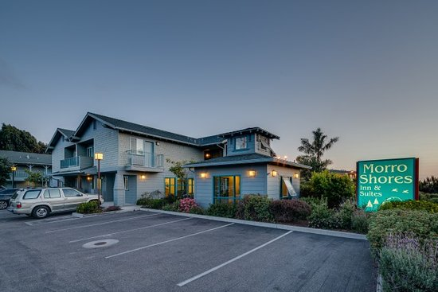
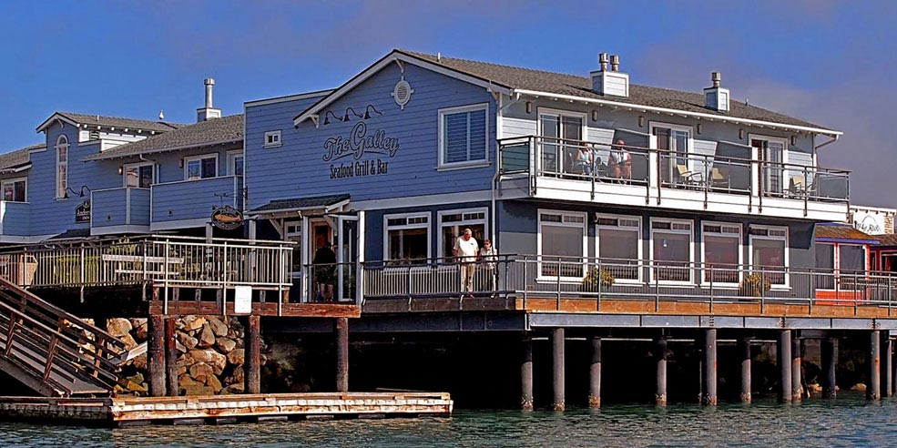
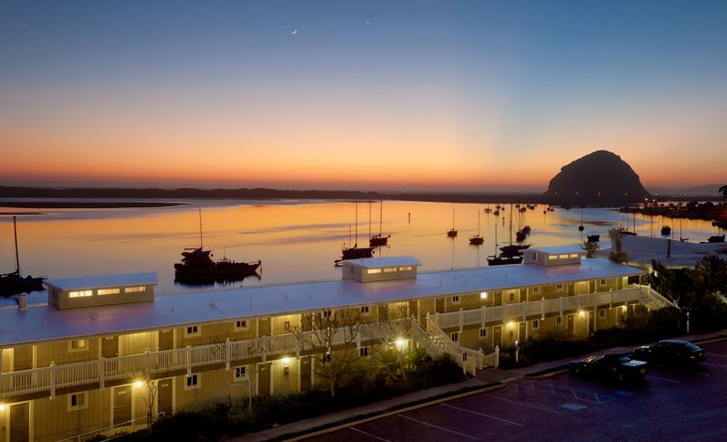
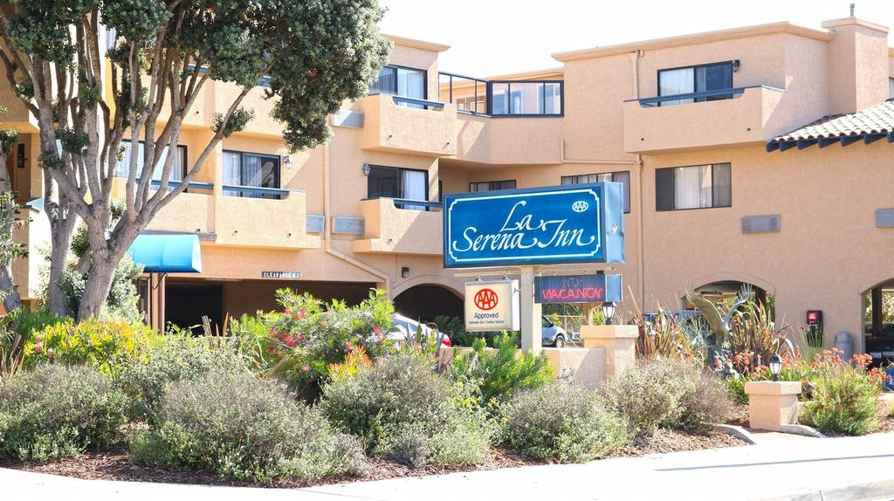
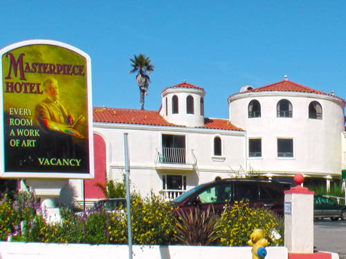
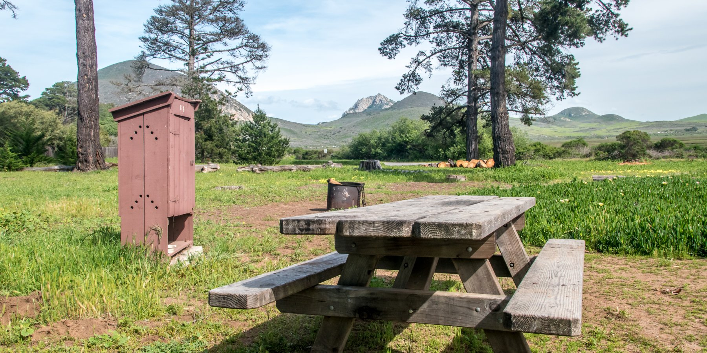

290 Atascadero Rd (805) 772-0222 · WebsiteMorro Shores Inn and Suites
Unwind in our unique indoor spa room after a long drive or a walk on the beach. This is the perfect place to read a book, mingle or simply kick back and relax while enjoying the sounds of our water fountain.

897 Embarcadero (805) 772-3434 · WebsiteAnderson Inn
A contemporary boutique hotel on the waterfront in the seaside village of Morro Bay, California. Simply inspired by the natural elements of sand, sea, and sky. the Anderson Inn is a reflection of good taste and lifestyle.

60 State Park Rd (805) 772-5651 · WebsiteThe Inn at Morro Bay
Relaxed waterfront hotel offering airy rooms with balconies, plus an outdoor pool and a restaurant. Great destination right on the embarcedero. With the benefit of our hot tub its a good place for kids.

990 Morro Avenue (805) 772-5665 · WebsiteLa Serena Inn
La Serena Inn is your prime location for all that Morro Bay has to offer. Within walking distance to the center of town and also to the Embarcadero and ocean, we are your hub for the ultimate getaway.

1206 Main Street (805) 772-5633 · WebsiteMasterpiece Hotel
The perfect destination for a coastal escape! Located on Main Street in Morro Bay, just blocks from all the best shops and restaurants in town. This idealistic beach town is full of fun and adventure for the whole family.

10am-5pm daily (805) 772-2560 · WebsiteMorro Bay State Park Campground
Morro Bay State Park features lagoon and natural bay habitat. The bay's most prominent landmark is Morro Rock. The park has opportunities for sailing, fishing, hiking, and bird watching.